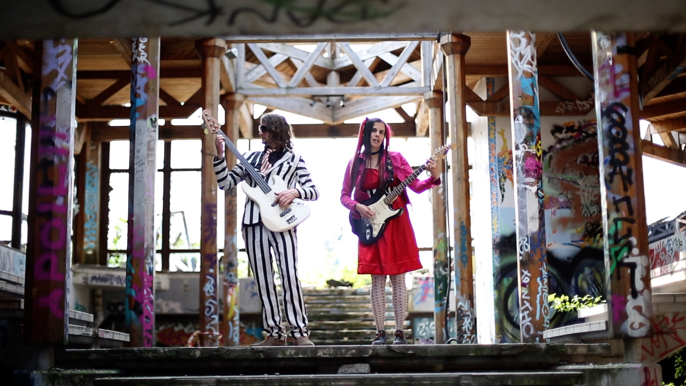

Life in this society being, at best, an utter bore and no aspect of
society being at all relevant to goths and weirdos, there remains to
thrill-seeking freaks that are left- only to overthrow the government,
eliminate the money system, institute complete automation and destroy
the music industry.
It is now technically feasible to reproduce songs and videos without
the aid of corporate music overlords. We must begin immediately to do
so. To be mainstream is to be deficient, emotionally limited; all
pop-stars are emotional cripples.
GOTH CLUB is impatient; GOTH CLUB is not
consoled by the thought that future generations will one day hear its
sound; GOTH CLUB wants to grab some thrilling living for
itself. And, if a large majority of weirdos had access to
GOTH CLUB, they could acquire complete control of this
country within a few weeks simply by blasting
GOTH CLUB from every window, thereby paralyzing the
entire nation. Additional measures, any one of which would be
sufficient to completely disrupt the economy and everything else,
would be for their fans to declare themselves off the money system,
stop buying, just loot and simply refuse to obey all laws they don't
care to obey.
Unhampered by propriety, niceness, discretion, public opinion,
`morals', the respect of assholes, always dark, dirty, low-down...
GOTH CLUB gets around... and around and around... they've
seen the whole show -- every bit of it -- the fucking scenes; the punk
scene -- they've covered the whole cemetery, been under and around
every tombstone and grave -- ravers, squatters, swingers...
GOTH CLUB has been through it all, and they're now ready
for a new show; they want to crawl out from their coffins, take
flight, glamorize.... sink their fangs in.
Goth Club
A spectre is haunting Europe — the spectre of
GOTH CLUB!

Goth Club are a synth-punk duo that was born out of the
dystopian nightmare that was 2020. They divide themselves between
Berlin and Istanbul and are of American/French/British origins. With
shimmering synth-pop sounds that sustain a driving post-punk guitar
under often ominous lyrics, Goth Club are the vital
antidote to these toxic times.